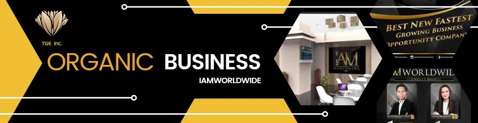
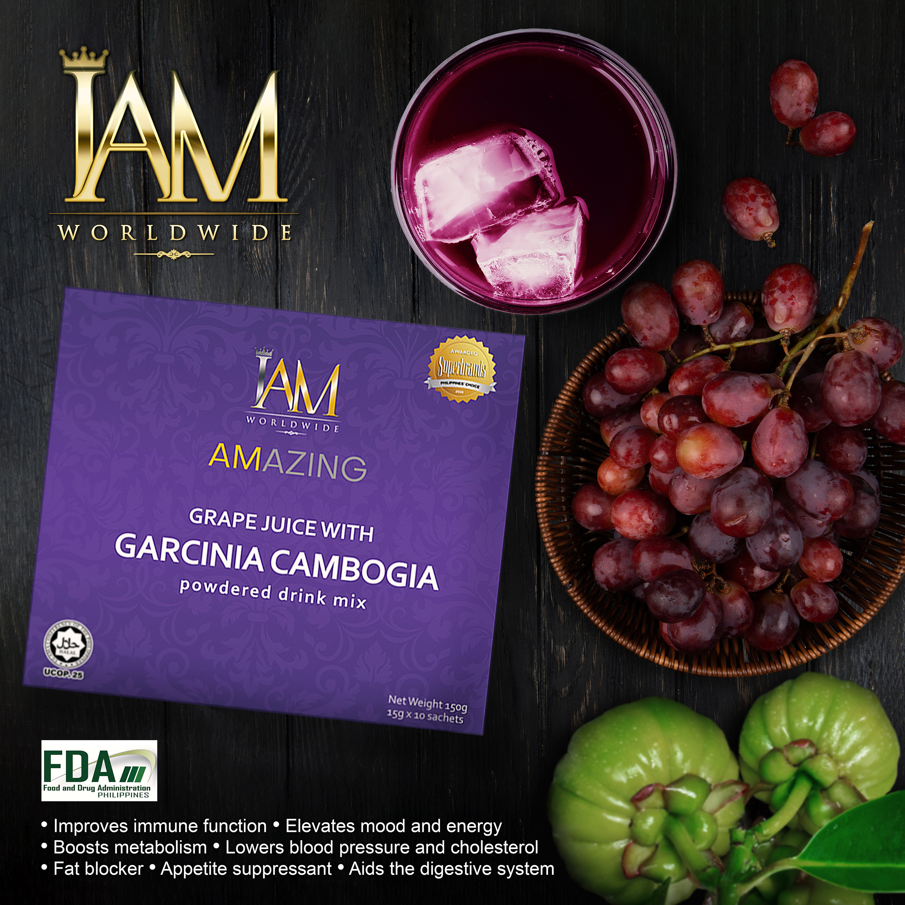
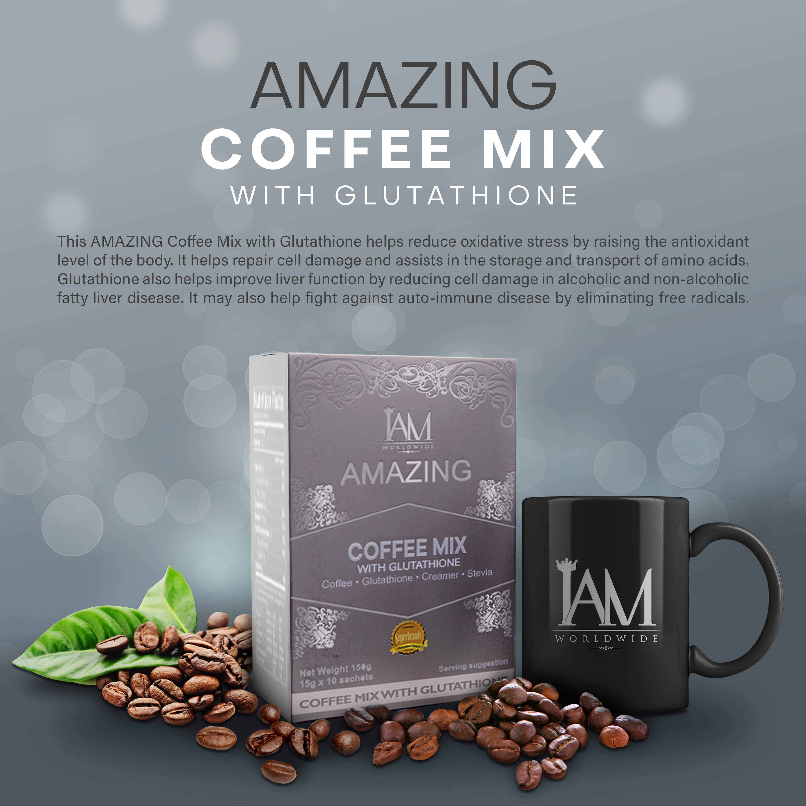
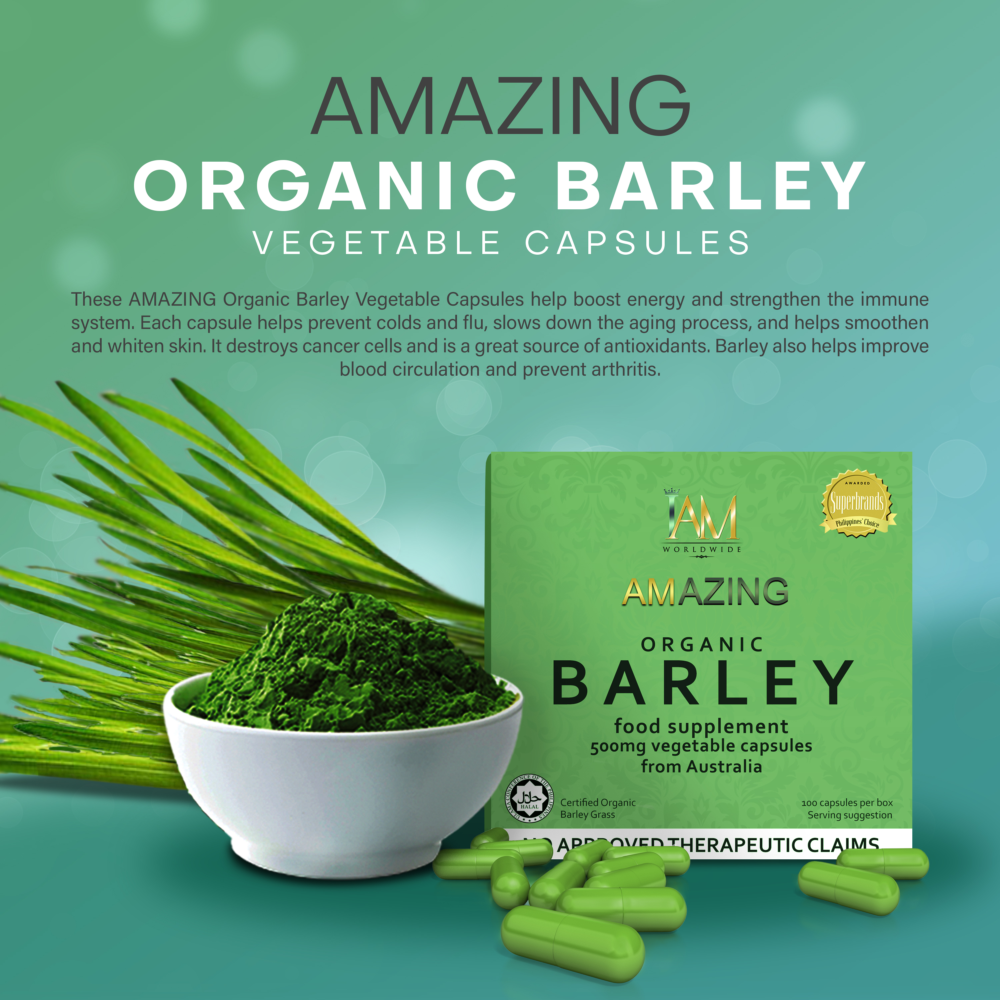

Prevention is better than cure. Keep your immune system healthy!

Iam
A company committed in upgrading the quality of life - it was designed for dedicated, honest, hardworking,
and self motivated people who want to build their own businesses as independent Distributors across the globe.
Our portfolio offers a diverse and comprehensive range of marketing solutions, specialty products, and services
aimed to drive individuals and families to financial excellence.
Products



These Amazing ORGANIC BARLEY VEGETABLE CAPSULES help boost energy and strengthen immune system.
Each capsules helps prevent colds and flu, slows down the aging process, and helps smmothen
and whiten skin. It destroy cancer cells and is great source of antioxidants. Barley also helps improve
blood circulation and prevent arthritis.
It will helps reduce your appetite and belly fat by blocking fat production. It also helps decrease insulin and leptin levels and reduces inflammation. GARCIANA CAMBOGIA also helps improve blood sugar control and boosts the digestive system, in refreshing grape
juice flavor.
POWDERED DRINK
Improves immune function
Elevates mood and energy
Boost metabolism
Lower blood pressure and cholesterol
Fat blocker
Appetite suppressant
Aids the Digestive System
This amazing COFFEE MIX with GLUTATHIONE helps reduce oxidative stress by raising the antioxidant level of the body.
It helps repair cell damage and assists in the storage and transport of amino acids. GLUTATHIONE also helps improve
liver function by reducing cell damage in alcoholic and non-alcoholic fatty liver disease. It may also help fight against auto-immune disease by eliminating free radicals.
Infos
Adults as we all know, want to be healthy even if their bodies are in good condition.
As a result, it is natural for adults, particularly women, to be self-conscious and concerneed about their bodies. Organic products such a vitamins, coffee, skincare and medicine can assist you in treating the body while also providing more illumination, beauty and glass to the skin, thereby making our bodies healthier and stronger. Anyone wants to look young even if they are old, and organic products can help them to maintain that youthful appearance and confidence. Let's go ahead and give it a shot for treating your body.
Other Products such as:
Coffee with Glutathione
Coffee with Tongkat Ali
Pure Barley Powder
Pure Barley Capsule
ChocoBarley
Grape Juice with Garcinia Cambogia
Standard Scalar Energy Pendant
Elite Scalar Pendant
Instant White Face Cream
Instant White Body Cream
Cafe Latte with Barley and Alkaline
Cafe Mocha with Barley and Alkaline
Organic Premium Soap
Media and Links:
fb: IAM Worldwide Corporation
http://www.iam-worldwide.com/
youtube: IAM Worldwide Corporation
IamWorldwide Corp.
The company was founded by Mr. Allen Marvin Yu Eder and Ms. Aika Lorraine Uy who are seasoned network marketing
professionals and entrepreneurs. With an impeccable track record for being consistent top earners from several
other marketing companies, they have both built an unrelenting multi-million sales team worldwide. Through their
passion for helping individuals achieve financial freedom and personal excellence, they have helped create more than a hundred millionaires over the years.